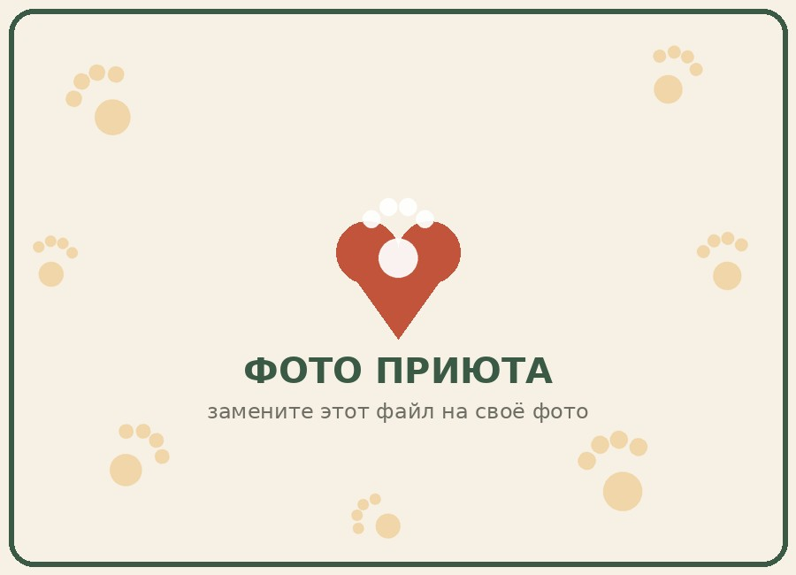

Toms
sunsVecums: 2 gadi kastr.
Mierīgs, jau prot komandu «sēdi», lieliski saprotas ar bērniem un citiem suņiem.
Patversme bezpajumtes dzīvniekiem
Mēs atrodam kaķus un suņus uz ielas, pagrabos un pie ceļiem, ārstējam tos, mācām uzticēties cilvēkiem un meklējam katram savu saimnieku. Kopš 2016. gada vairāk nekā 640 dzīvnieki ir atraduši ģimeni pateicoties mūsu brīvprātīgajiem.

Foto: patversmes komanda, 2025. gada vasara.
«Siltās Ķepas» ir privāta patversme bezpajumtes dzīvniekiem, kas pastāv pilnībā no ziedojumiem un brīvprātīgo darba. Mēs neeitanizējam veselus dzīvniekus un turam tos pie sevis tik ilgi, cik nepieciešams, kamēr atrodas piemērota ģimene.
Patversmes teritorijā ir siltas voljēras suņiem, atsevišķa māja kaķiem, karantīnas zona un neliels veterinārais kabinets. Katrs dzīvnieks pirms nodošanas ģimenei iziet apskati, vakcināciju un, ja iespējams, sterilizāciju.
Vairāk par dzīvnieku tiesībām un atbildīgu attieksmi pret tiem var uzzināt organizācijas World Animal Protection mājaslapā, ar kuru mēs salīdzinām savus turēšanas standartus.
Zemāk ir tikai daļa no mūsu audžiem. Pilns saraksts tiek atjaunots katru nedēļu, tāpēc, ja «jūsu» mājdzīvnieks vēl nav šeit — uzrakstiet mums, mēs atsūtīsim foto un video.
Vecums: 2 gadi kastr.
Mierīgs, jau prot komandu «sēdi», lieliski saprotas ar bērniem un citiem suņiem.
Vecums: 1 gads ster.
Mīļa un zinātkāra, mīl sēdēt uz palodzes un vērot putnus.
Vecums: 4 gadi kastr.
Liels, bet ļoti maigs raksturs. Meklē pieredzējušu saimnieku aktīvām pastaigām.
Vecums: apmēram 6 mēneši
Nonāca pie mums no ģimenes, kas pārcēlās. Prot atkārtot vairākus vārdus.
Vecums: 3 gadi ster.
Nedaudz bailīga pēc ielas, bet ātri pierod un kļūst ļoti uzticīga.
Vecums: 5 mēneši
Rotaļīgs mazulis, nepieciešama ģimene, kas gatava nodarboties ar viņa audzināšanu un dresūru.
Šajā kategorijā pagaidām nav anketu — ielūkojieties vēlāk vai uzrakstiet mums, mēs pieteiksim jaunumus.
Īss videoklips par to, kā dzīvnieki iepazīstas ar cilvēkiem — kā simbolisks stāsts par pirmo tikšanos, jo tas ir viens no pašiem pirmajiem jebkad augšupielādētajiem YouTube video.
Procedūra nav sarežģīta, taču mums ir vairāki obligāti soļi — tas nepieciešams, lai dzīvnieks nonāktu drošās rokās.
| Kategorija | Kas ietilpst | Ziedojums, EUR | |
|---|---|---|---|
| Vakcinācija | Sterilizācija | ||
| Kaķēns / kucēns | jā | vēlāk pēc vecuma | 30 |
| Pieaugusi kaķe | jā | jā | 20 |
| Pieaugušais suns | jā | jā | 25 |
| Dzīvnieks vecāks par 7 gadiem | pēc veterinārā ieteikuma | 0 — bez maksas | |
Patversmei pastāvīgi ir vajadzīgi cilvēki suņu pastaigāšanai, palīdzībai virtuvē, mājdzīvnieku fotografēšanai anketām un vienkārši laipnas rokas nedēļas nogalēs. Aizpildiet īsu formu — kurators sazināsies ar jums divu darba dienu laikā.
Lauki, kas atzīmēti ar zvaigznīti (*), ir obligāti aizpildāmi.
Atbrauciet iepazīties ar mājdzīvniekiem klātienē — mēs strādājam katru dienu, izņemot pirmdienas.
Vairāk foto un stāstu par izmitinātajiem mājdzīvniekiem — mūsu grupā, bet pamata faktus par dzīvnieku paradumiem var atsvaidzināt rakstā Wikipedia par patversmju uzbūvi.